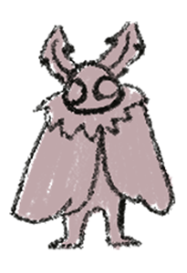

Mothman gained notoriety in the town of Point Pleasant, West Virginia, during the 1960s. Described as a winged humanoid with large, glowing red eyes, Mothman is often associated with foreboding events, particularly the collapse of the Silver Bridge in 1967, which claimed several lives. Eyewitness accounts of Mothman describe an eerie figure that seemed to defy conventional explanations, appearing near disaster sites or as a harbinger of impending doom. The legend has since become a staple of American folklore, inspiring books, documentaries, and even a Hollywood film. Skeptics attribute Mothman sightings to misidentifications of owls, herons, or other large birds, while others see it as a cultural phenomenon rooted in the anxieties of the time. Regardless of its origin, Mothman continues to capture the imagination and curiosity of those intrigued by the unexplained and the supernatural.
